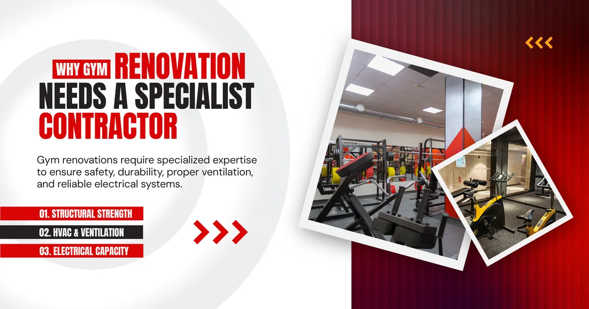
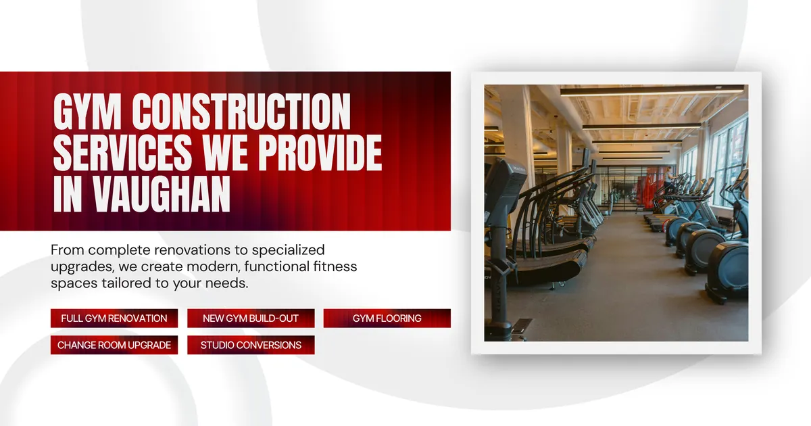
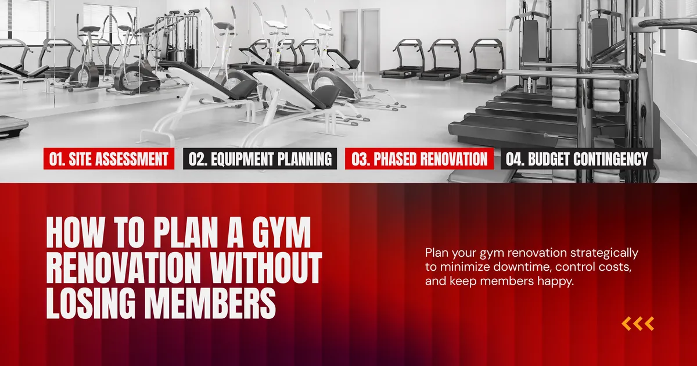
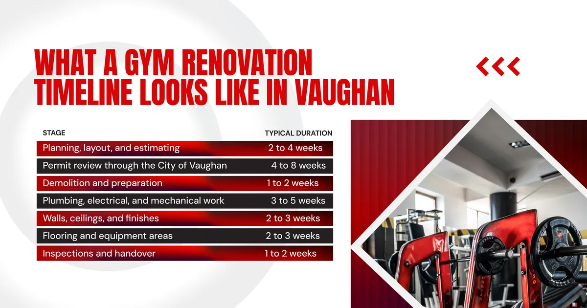
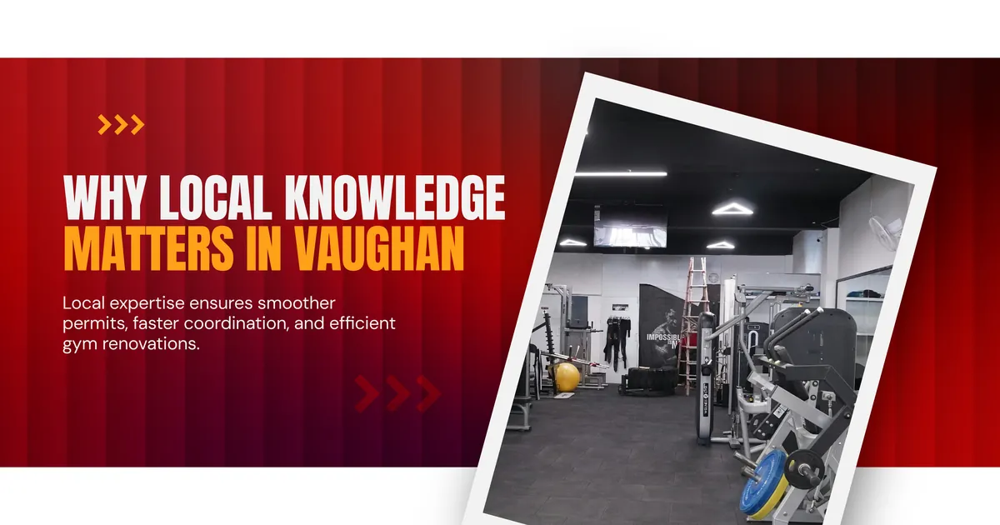
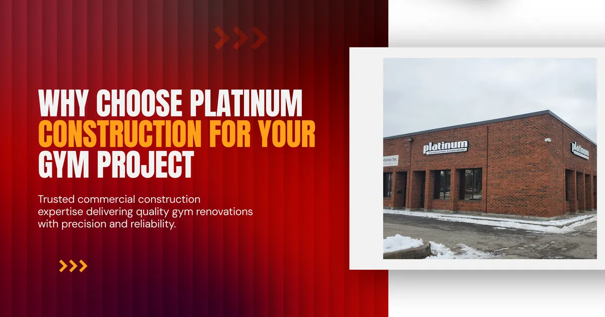
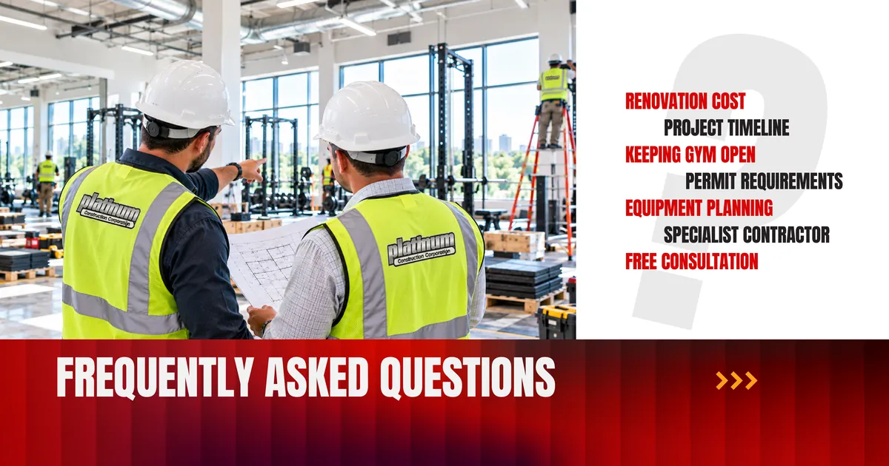
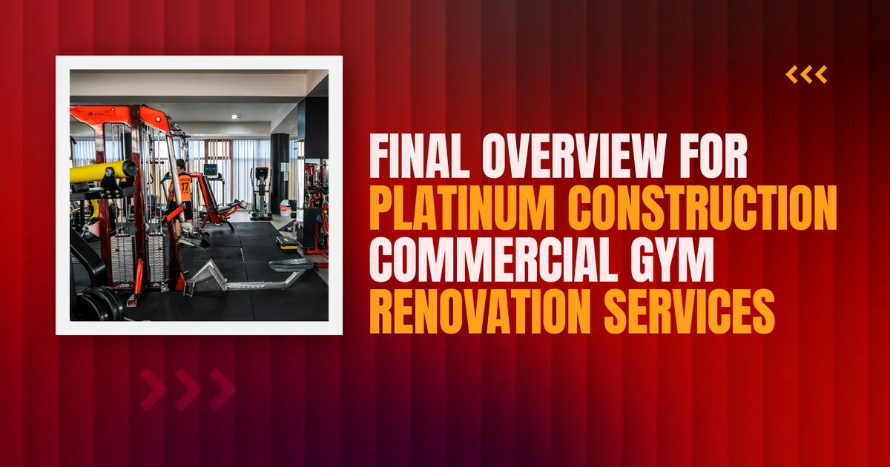

If you operate a fitness facility in Vaughan, a renovation will eventually become the smartest move you can make. The challenge is finding a gym construction service company in Vaughan that understands what a working gym demands and can deliver the upgrade without hurting your membership base.
This guide explains what gym renovation involves, how to plan it, and what to look for in a contractor.

Why Gym Renovation Needs a Specialist Contractor
A gym looks like a simple open space, but it behaves very differently from an office or a store. A contractor with no fitness experience can easily underestimate what the building is asked to do every day.
The Structure Takes a Beating
Dropped barbells and constant foot traffic stress floors and subfloors. A proper gym floor is a system built to absorb impact and keep equipment stable. A gym construction contractor in Vaughan with real fitness experience knows which flooring suits each zone.
The Mechanical Systems Work Harder
A busy gym produces a lot of heat and humidity. Standard commercial systems are sized for people at desks, not people training hard. If members say the space feels stuffy, the answer is often a mechanical upgrade. Commercial gym contractors who understand fitness occupancy size these systems properly.
The Electrical Load Is Higher Than You Think
Cardio machines, sound systems, lighting, and screens all draw power at once. Adding equipment without upgrading the electrical plan leads to tripped breakers. A good renovation reviews your full equipment list before any wiring is touched.

Gym Construction Services We Provide in Vaughan
Platinum Construction offers a full range of gym construction services in Vaughan, from focused upgrades to complete rebuilds. Here is how those services typically break down.
Full Gym Renovation
A complete renovation updates layout, flooring, mechanical systems, electrical, lighting, and finishes together. It suits facilities that have outgrown their original design.
Gym Build Out for New Spaces
If you are moving into a new unit, our team handles the full gym build out from an empty commercial shell. As gym builders in Vaughan, we manage design coordination, permits, construction, and handover under one accountable team.
Change Room and Wet Area Upgrades
Showers, lockers, and washrooms are often the first areas members criticize. Updating plumbing, waterproofing, and ventilation improves the experience and reduces maintenance problems.
Flooring Zone Upgrades
Weight areas, cardio zones, and group studios each need different surfaces. Replacing flooring zone by zone can keep your facility open.
Studio and Specialty Room Conversions
Many Vaughan gyms are adding cycling rooms, yoga studios, or boxing areas. These need acoustic planning and flooring suited to the activity.
The table below shows what each scope typically involves.
| Renovation Scope | What It Usually Includes |
|---|---|
| Full gym renovation | Layout changes, flooring, HVAC, electrical, lighting, finishes |
| Gym build out | New construction inside an empty unit, all trades, permits, handover |
| Change room upgrade | Plumbing, waterproofing, ventilation, lockers, finishes |
| Flooring upgrade | Zone specific surfaces, subfloor repair, transitions |
| Studio conversion | Acoustic treatment, mechanical changes, specialty flooring |

How to Plan a Gym Renovation Without Losing Members
Renovating an open gym is a balancing act. Good planning keeps members showing up.
Start With a Site Assessment
Before pricing anything, a qualified gym construction firm in Vaughan should inspect the space. Electrical capacity, plumbing, ventilation, and structure all affect cost. Skipping this step is the most common reason budgets grow midway through a project.
Finalize Your Equipment List Early
Equipment choices drive electrical circuits, floor loading, and layout. Decide what you are buying before construction begins, not during it.
Consider a Phased Approach
Many gyms stay open by working in phases, finishing one zone at a time. This protects revenue but needs careful scheduling. Your contractor should help you decide whether phasing or a short full closure suits you better.
Build in a Contingency
Older buildings can hide surprises behind walls. Setting aside ten to fifteen percent of your budget for unexpected conditions is standard practice.

What a Gym Renovation Timeline Looks Like in Vaughan
Most projects follow a similar sequence.
| Stage | Typical Duration |
|---|---|
| Planning, layout, and estimating | 2 to 4 weeks |
| Permit review through the City of Vaughan | 4 to 8 weeks |
| Demolition and preparation | 1 to 2 weeks |
| Plumbing, electrical, and mechanical work | 3 to 5 weeks |
| Walls, ceilings, and finishes | 2 to 3 weeks |
| Flooring and equipment areas | 2 to 3 weeks |
| Inspections and handover | 1 to 2 weeks |
A focused upgrade finishes faster, while a full commercial gym construction project in Vaughan often takes several months. Your contractor should give you a written schedule before work begins.

Why Local Knowledge Matters in Vaughan
Permits and inspections influence how smoothly a project runs. A gym contractor who regularly works in Vaughan and across York Region already understands how the City of Vaughan reviews commercial applications and what inspectors check.
Local contractors also have established relationships with electricians, mechanical trades, and flooring specialists, which keeps schedules tight.
Platinum Construction serves Vaughan, Woodbridge, Maple, Concord, Kleinburg, Thornhill, and the wider Greater Toronto Area.

Why Choose Platinum Construction for Your Gym Project
Platinum Construction is a commercial builder with a strong record across Ontario, including detailed brand standard projects for national names like Chipotle, Starbucks, Edo Japan, and Tim Hortons. That experience matters for gym owners because the same disciplines apply: precise planning, strict specifications, tight schedules, and consistent quality.
Here is what you can expect when you work with our team.
Every project is led by a dedicated project manager who coordinates all trades and keeps you informed.
Estimates are written and itemized, so you can see exactly where your money goes.
We manage permit applications as part of our service.
We raise issues early and present options before proceeding, so there are no unpleasant surprises at the end.
As gym construction specialists in Vaughan, we treat your facility as a business that needs to perform, not just a space that needs to look good.

Frequently Asked Questions
How much does a commercial gym renovation cost in Vaughan?
Costs depend on size, scope, and existing conditions. A site assessment is the only reliable way to get an accurate number for your facility.
How long does a gym renovation take?
Smaller upgrades can take a few weeks. Full renovations usually take several months including permit approval.
Can my gym stay open during renovation?
Often yes. Phased construction allows one zone to be completed at a time, though some projects work better with a short full closure.
Do I need permits for a gym renovation in Vaughan?
Yes, in most cases. Work involving structural, electrical, plumbing, or mechanical changes requires permits through the City of Vaughan.
What is the most important thing to decide before construction starts?
Your equipment list and layout. Both affect electrical planning, flooring, and structural requirements.
Why hire a gym specialist instead of a general contractor?
Gyms have unique demands around flooring, ventilation, and electrical load that general contractors without fitness experience often underestimate.
How do I get started with Platinum Construction?
Visit platinumconstruction.com to book a free consultation. We will review your goals, space, and timeline.

Final Overview for Platinum Construction Commercial Gym Renovation Services
A well planned renovation can give your gym a stronger layout, a better member experience, and systems that keep up with growth. The key is choosing a contractor who understands fitness facilities and respects both your budget and your schedule.
If you are looking for a gym construction service company in Vaughan, Platinum Construction is ready to help you plan and deliver your project with confidence. Visit platinumconstruction.com to start the conversation today.